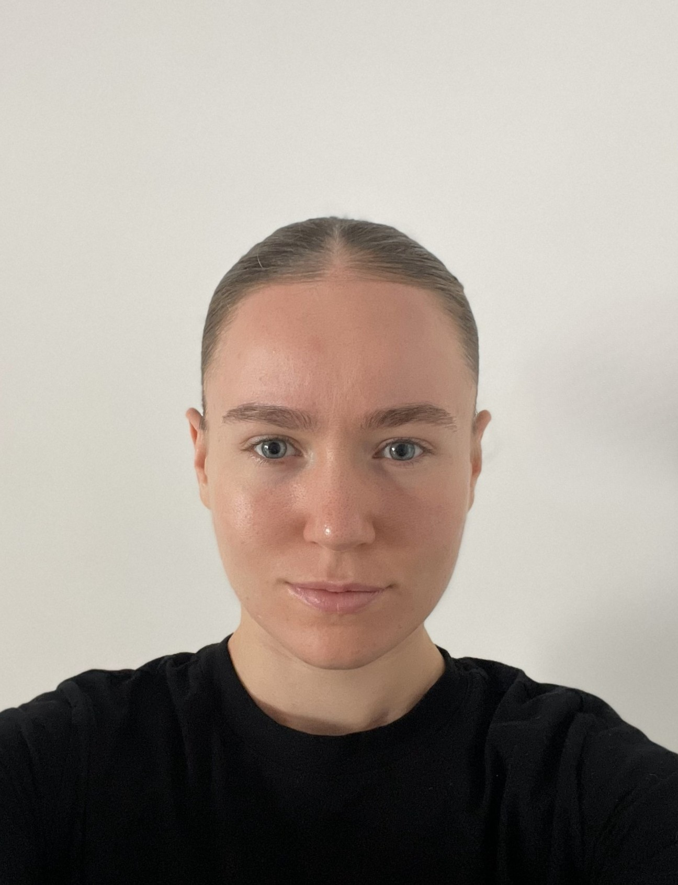

ANNABELLE CHARRIER · MASTER 2 STAPS
Qui suis-je ?
Je m’appelle Annabelle Charrier et le sport accompagne ma vie depuis l’enfance. J’aime autant le pratiquer que découvrir de nouvelles disciplines et comprendre ce qui nous fait progresser. Il m’a appris à persévérer, à avancer en équipe et à relever des défis.
Aujourd’hui, étudiante en Master 2 STAPS Management des Événements et Loisirs Sportifs, parcours Conduite de projet, à l’Université Paris Nanterre, je souhaite mettre cette énergie au service de projets concrets : rassembler les passionnés, coordonner chaque détail et créer les événements que j’aimerais moi-même vivre.
Avec La Nuit Sportive de l’UPN, j’imagine un événement qui réunit ce qui m’anime : le sport, le collectif et le plaisir de partager une expérience. Mon ambition : contribuer, depuis les coulisses, aux moments qui nous donnent envie de prendre le départ.

Master 2 · Événementiel sportif
LE PROJET
La Nuit Sportive de l’UPN
Fais vibrer le campus, du premier au dernier tour.
Le 6 novembre 2026, de 19 h à 2 h du matin : une course nocturne de 5 km avec classement, des animations et une soirée festive pour les étudiants et personnels de l’Université Paris Nanterre.
Découvrir le programme →